1.결제 관리
이 화면은 거래명세서에 대한 전자 결제 내역을 조회하고 관리하는 화면으로 결제 금액과 상세 내역, 결제 현황을 확인할 수 있습니다.
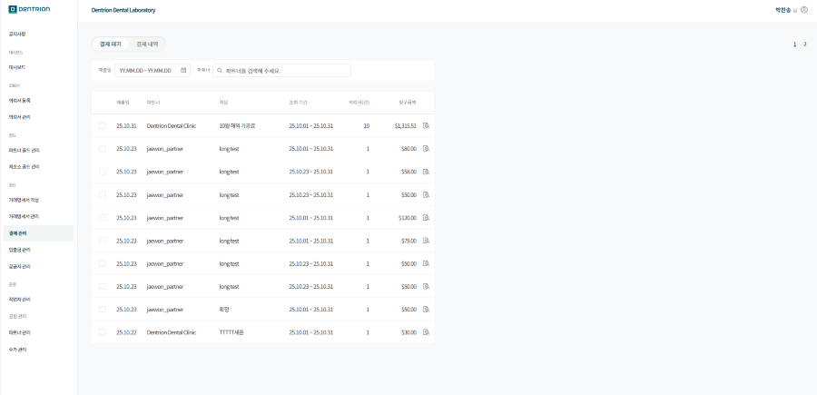
1-1.기능 설명
1-1-1.결제 관리 상태
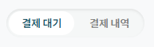
1.[결제 대기] : [발급 완료] 상태의 거래명세서 결제건들을 확인 할 수 있으며 결제 확인 처리가 가능합니다.
2.[결제 내역] : 결제 확인 처리 혹은 파트너에서 전자 결제를 성공적으로 진행한 경우 [결제 내역]에서 확인이 가능합니다.
1-2.결제 대기
1-2-1.매출일 조회
원하는 기간의 거래명세서을 상세 검색할 수 있습니다.
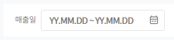
1-2-2.파트너 검색
원하는 파트너의 거래명세서만 확인할 수 있습니다.

1-2-3.초기화
조회 기간 설정 값이 있을 경우 초기화 버튼이 생성됩니다.
초기화 버튼 클릭 시 파트너 설정 값은 초기화 되지 않습니다.
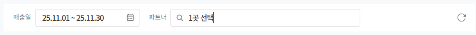
1-2-4.결제 대기 목록
조회 기간 기준 내림차순으로 정렬되며 동일한 기간 내에서는 최신순으로 정렬됩니다.
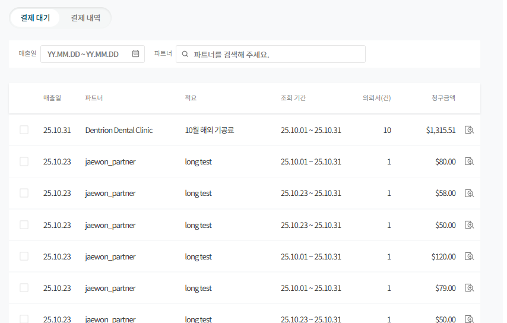
1.[매출일] : 거래명세서의 매출 확정 일자입니다.
2.[파트너] : 거래명세서의 청구되는 파트너명입니다.
3.[적요] : 거래명세서의 매출 확정 시 입력한 내용입니다.
4.[조회 기간] : 거래명세서의 거래 기간입니다.
5.[의뢰서] : 해당 거래명세서에 포함된 의뢰서의 총 건수를 확인할 수 있습니다.
6.[청구 금액] : 모든 합산 내역을 반영한 최종 결제 금액입니다.
7.[상세 보기] : 거래명세서의 상세 내역을 확인할 수 있습니다.
1-2-5.결제 확인
결제 처리된 거래명세서를 제조소에서 확인 후 선택하여 결제 확인을 할 수 있습니다.
제조소에서 결제 확인 처리 시 [기공소 확인]으로 표시됩니다.
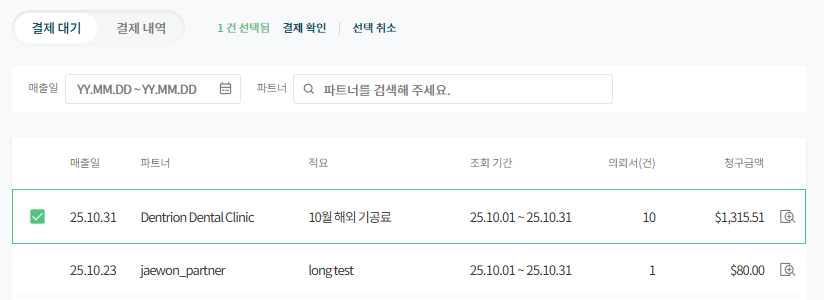
결제 내역
1-3-1.일시 조회
접속일 기준 1일~말일로 기본값이 설정되있습니다.
원하는 기간의 거래명세서를 상세 검색할 수 있습니다.
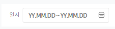
1-3-2.파트너 검색
원하는 파트너의 거래명세서만 확인할 수 있습니다.
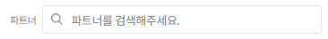
1-3-3.초기화
일시 설정 값이 있을 경우 초기화 버튼이 생성됩니다.
초기화 버튼 클릭 시 파트너 설정 값은 초기화 되지 않습니다.
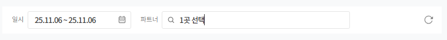
1-3-4.결제 내역 목록
일시 기준 내림차순으로 정렬되며 동일한 기간 내에서는 파트너 오름차순으로 정렬됩니다.
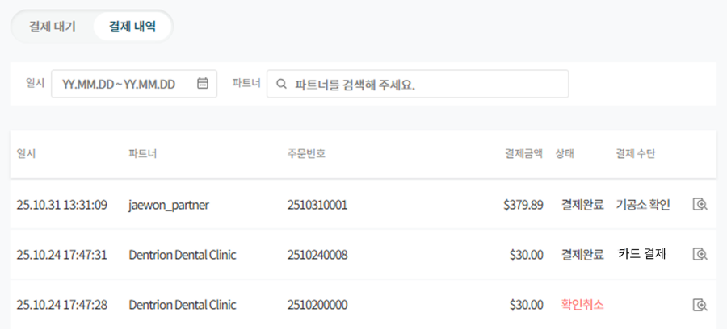
1.[일시] : 결제가 완료된 일시가 표시됩니다.
2.[파트너] : 결제 완료된 파트너명입니다.
3.[주문번호] : 결제 내역에 대한 주문번호입니다.
4.[결제 금액] : 모든 결제 건에 대한 최종 결제 금액입니다.
5.[상태] : 결제 건에 대한 결제 상태 정보입니다.
상태 예시
결제 완료 : 결제 건이 정상적으로 결제가 완료된 상태입니다.
확인 취소 : 결제 후 결제 취소한 상태입니다.
6.[결제 수단]
결제 수단 예시
기공소 확인 : 제조소에서 결제 확인을 처리한 경우입니다.
카드 결제 : 파트너가 직접 전자 결제를 한 경우입니다.
7.[상세 보기] : 결제 건에 대한 상세 내역을 확인할 수 있습니다.
1-3-5.결제 내역 상세 보기
결제 수단별로 상세 내역을 확인할 수 있습니다.
[기공소 확인]
제조소에서 결제 확인 처리한 결제 내역의 상세 정보를 확인할 수 있습니다.
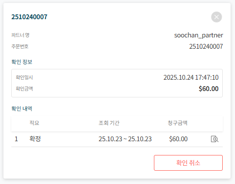
1.[주문 번호] : 결제 내역에 대한 주문번호입니다.
2.[파트너명] : 결제 완료된 파트너명입니다.
3.[확인 일시] : 제조소에서 결제 확인 처리한 일시 정보가 표기됩니다.
4.[확인 금액] : 결제 확인 처리한 최종 결제 금액 정보가 표기됩니다.
5.[확인 내역] : 결제 확인 처리한 거래명세서 목록을 확인할 수 있습니다.
6.[상세 보기] : 해당 거래명세서의 상세 목록을 확인할 수 있습니다
7.[확인 취소] : 제조소에서 결제 확인 처리한 결제 내역을 취소할 수 있습니다.
[카드 결제]
파트너에서 직접 전자 결제를 통해 결제 완료한 결제 내역의 상세 정보를 확인할 수 있습니다.
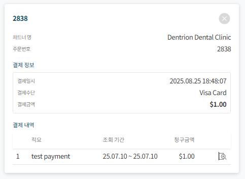
1.[주문 번호] : 결제 내역에 대한 주문번호입니다.
2.[파트너 명] : 결제 완료된 파트너명입니다.
3.[결제 일시] : 파트너에서 전자 결제를 완료한 시점의 일시가 표기됩니다.
4.[결제 수단] : 전자 결제를 진행한 수단이 표시됩니다.
5.[결제 금액] : 전자 결제를 진행한 최종 결제 금액 정보가 표기됩니다.
6.[결제 내역] : 결제 처리한 거래명세서 목록을 확인할 수 있습니다.
7.[상세 보기] : 해당 거래명세서의 상세 목록을 확인할 수 있습니다.